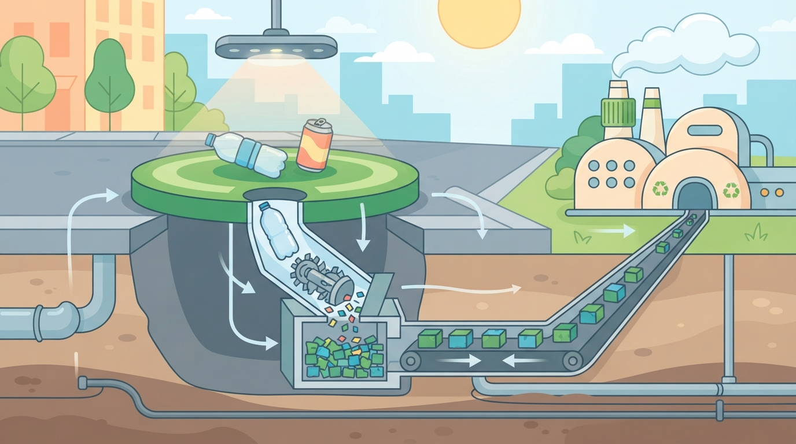
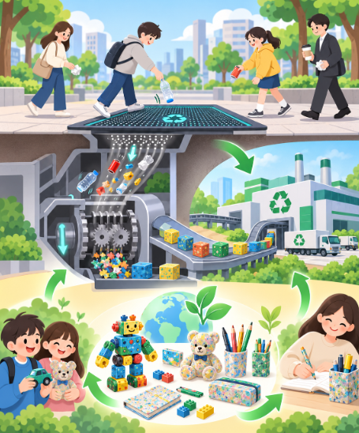
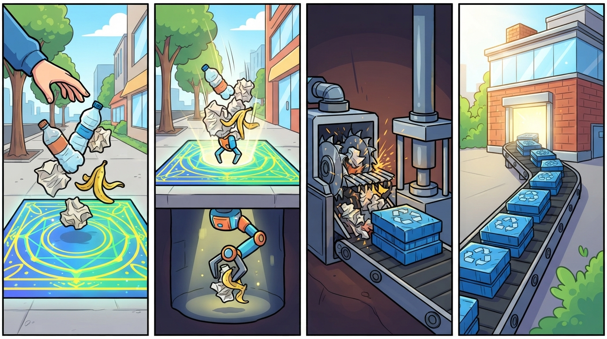
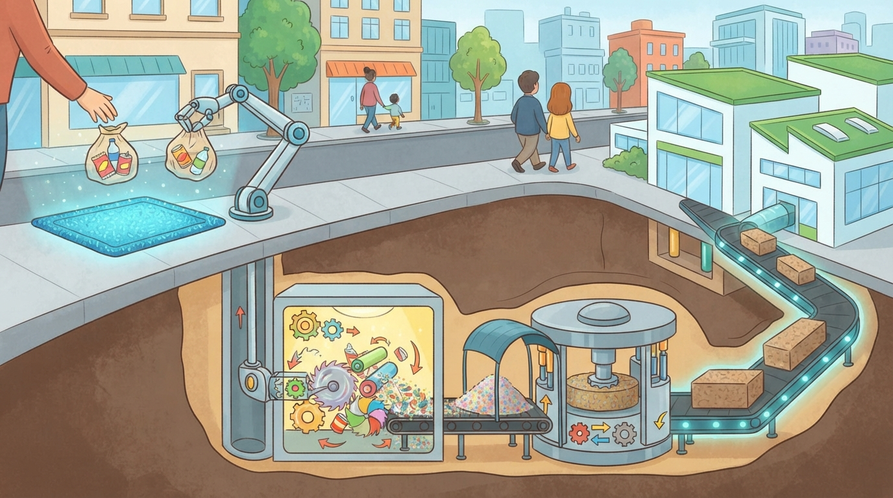
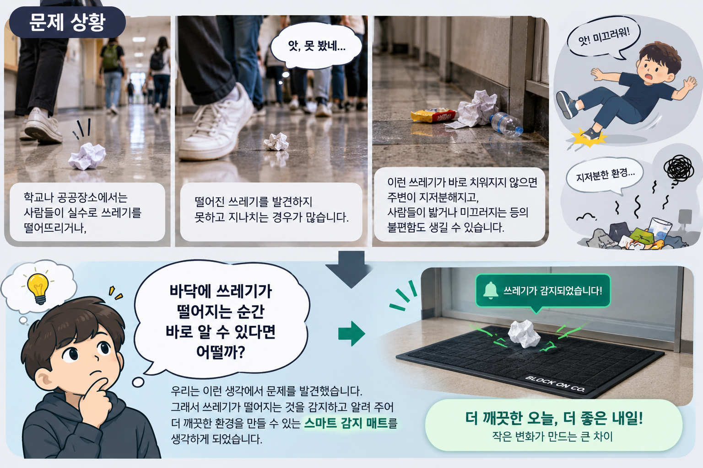

쓰레기를 치워주는 매트
지구를 지키는 일은 여러분에게서 시작됩니다
08조 BLOCK ON CO.
BLOCK ON CO.
작은 아이디어를 하나씩 쌓아
새로운 가능성을 만들어 가는 팀이에요
블록을 연결해 작품을 완성하듯
서로의 생각을 모아 더 나은 결과를 만들어요
떨어진 쓰레기를 발견하지 못하고
그냥 지나치는 일이 많아요
바로 치우지 않으면 지저분해지고
밟거나 미끄러질 수 있어요
“바닥에 쓰레기가 떨어지는 순간
바로 알 수 있다면?”
우리가 어떻게 하면 길거리 쓰레기를 줄이고,
버려진 쓰레기를 다시 재활용할 수 있을까?
리매트(Re:Mat)
버려진 쓰레기를 자동으로 모아
새로운 제품으로 다시 태어나게 하는
AI 스마트 재활용 매트예요

설치 장소 : 학교 복도 · 급식실 · 지하철역 · 쇼핑몰 · 공원
좋은 점 : 알림으로 빠르게 처리 → 청소 시간과 인력 절약
사람들이 쓰레기를 함부로 버리지 않게 도와줘요




08조 BLOCK ON CO.
들어 주셔서 고맙습니다!
환경을 지키는 여러분이 됩시다!!